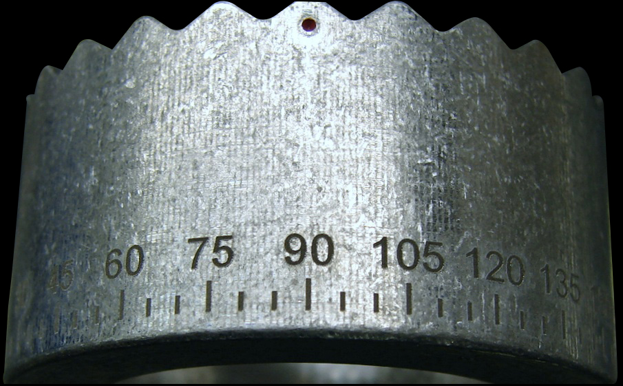
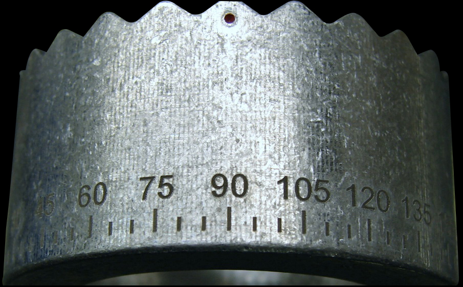

Dual-Head Laser Engraver Doubles Capability with One Just Controller
The innovative, patented Telesis dual-head laser system is perfectly suited for advanced applications that require rapid processing. The multi-head design of this laser offers the ability to control two laser markers with the same controller, reducing overall footprint and lowering the cost of operation. It is the industry’s only fiber laser system of its kind to be entirely air-cooled and powered from a single-phase power outlet.

- Increases throughput in high-speed and repetitive applications
- Unique ability to control two lasers from the same controller
- Saves floor space and reduces part handling by the operator
- Unmatched marking efficiency and operating productivity
Models
- The Dual-Head Laser Marker is configurable to your specific needs.
Technology Options
- Mark-on-the-Fly


 
